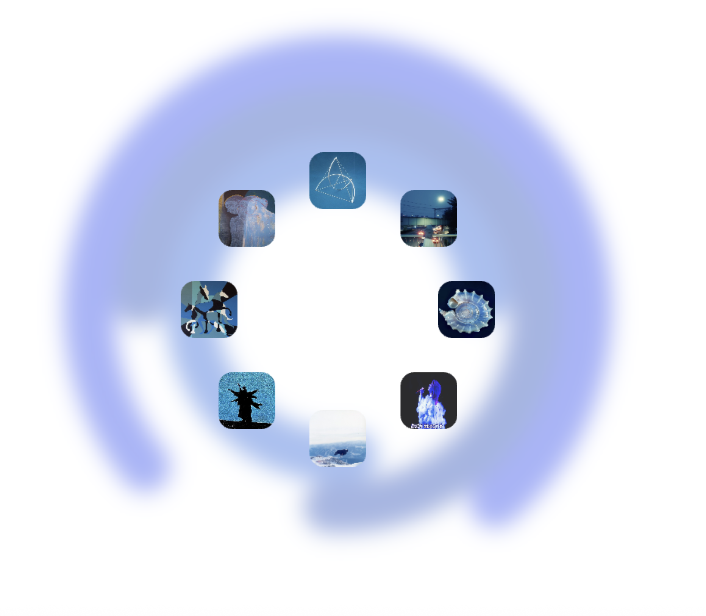

"you met me in a very hypnotic time in your life"
The final version of the project is a combination of the previous two sketches. I use two separate JS files and add shadows and opacity.
Try to scroll it with your mouse!
Iterations
Rotation
The foreground is an interactive wheel carousel that rotates based on mouse movement.
Oscillation
Limit the color range to blue.
Oscillation 2
Use randomness to create continuously changing color.
Oscillation 3
Adding blur filter.
blend 1
Put them together and become one sketch.
blend 2
I use two separate JS files (bg-sketch.js and sketch.js).
blend 3
adding picture and opacity
